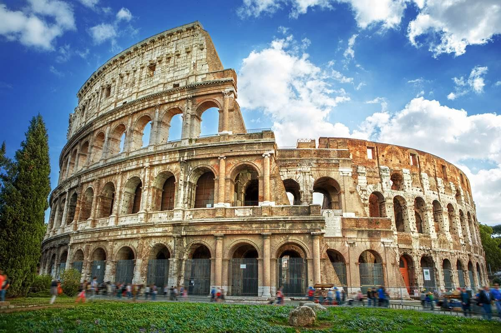
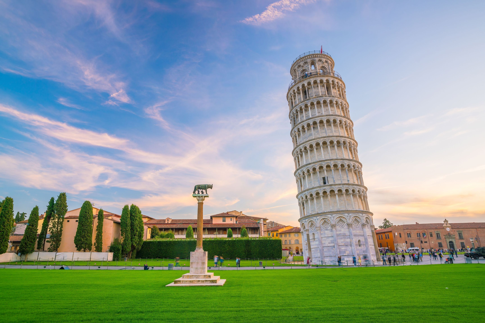
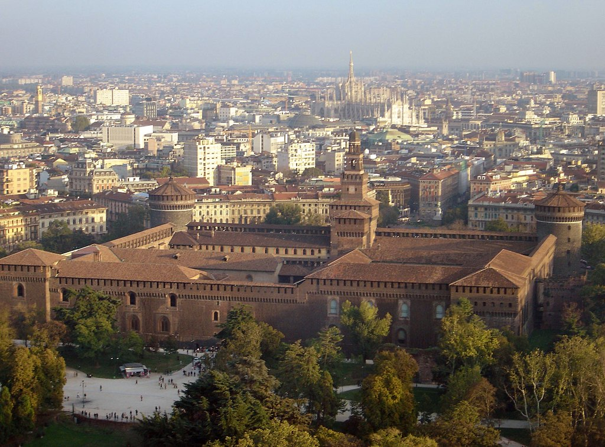
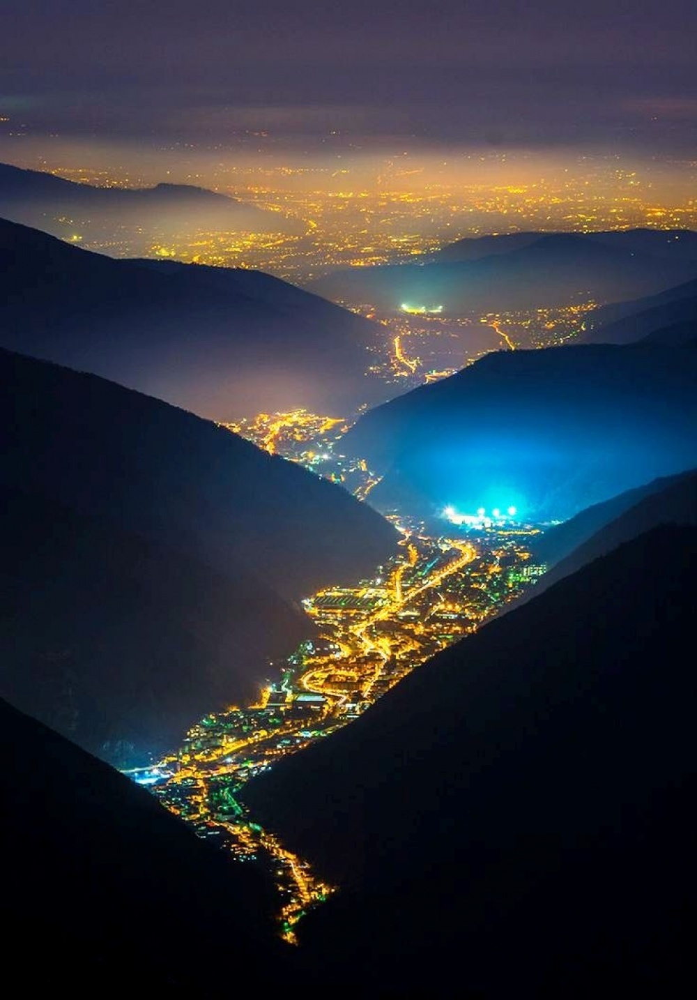
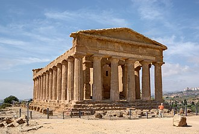

Italy

Основана
19 сентября 855 года (Средневековое Королевство Италия)
17 марта 1861 года (Королевство Италия (1861—1946))
Крупнейшие города Рим, Милан, Неаполь, Турин, Палермо, Генуя, Венеция, Болонья, Флоренция, Бари, Катания


замок сфорца

Венецианская республика была основана в 697 году

Долина огней, Италия

Храм Согласия в Долине храмов
Italy
У этого термина существуют и другие значения, см. Италия (значения).
Запрос «Итальянская Республика» перенаправляется сюда; об историческом государстве 1802—1805 годов см. Итальянская республика (1802—1805).
Ита́лия (итал. Italia [iˈtaːlja]), официальное название — Италья́нская Респу́блика (итал. Repubblica Italiana [reˈpubːlika itaˈljaːna]) — государство в Южной Европе, в центре Средиземноморья. Входит в Европейский союз и НАТО с момента их создания, является третьей по величине экономикой еврозоны.
Граничит с Францией на северо-западе (протяжённость границы — 488 км), Швейцарией (740 км) и Австрией (430 км) — на севере, Словенией — на северо-востоке (232 км).
Внутри территории Италии находятся два государства-анклава: государство Сан-Марино и расположенное внутри территории Рима ассоциированное с Италией государство Ватикан, с каждым из которых Италия имеет внутреннюю границу протяжённостью соответственно 39 км и 3,2 км.
Занимает Апеннинский полуостров, крайний северо-запад Балканского полуострова, Паданскую равнину, южные склоны Альп, острова Сицилия, Сардиния и ряд мелких островов[7].
На территории Италии находится 58 памятников всемирного наследия ЮНЕСКО
Древний Рим
Древний Рим
Основные статьи: Древний Рим, История Древнего Рима и Хронология истории Древнего Рима
К началу I тысячелетия до н. э. юг и центр Италии были заселены италийскими народами, одним из которых были латины. Латины образовали Латинский союз, включавший 30 цивитасов, органами управления каждого из которых являлись народное собрание (комиции или консилии), совет старейшин (курии или сенат) и вожди (рексы). По латинским легендам, первоначально самым сильным цивитасом был Лаврент, затем усилилась Лавиния, потом — Альба-Лонга, в VI веке самым сильным цивитасом союза стал Рим. После самнитских войн к 290 году Рим поставил в зависимость от себя все остальные италийские народы. Часть земель неримского населения провинций передавалась римлянам, основывались римские поселения — колонии — таким образом происходила романизация Италии. При римском императоре Диоклетиане в Италии было введено деление на провинции, во главе которых стояли президы и консуляры. После падения Римской империи в 476 году королём Италии был провозглашён полководец Одоакр, руг по происхождению, но в 493 году его владения были захвачены остготами, а сам он был убит[12].
Древний Рим создал культурную почву для европейской цивилизации, оказав определяющее влияние на средневековую и последующую историю. Современному миру Древний Рим подарил римское право, некоторые архитектурные формы и решения (например, крестово-купольную систему) и множество других новшеств (например, водяная мельница). Христианство как вероучение родилось на территории Римской империи. Официальным языком древнеримского государства был латинский, религия в течение большей части периода существования была политеистична, неофициальным гербом империи был золотой орёл (aquila), а после принятия христианства появились лабарумы с хризмой.